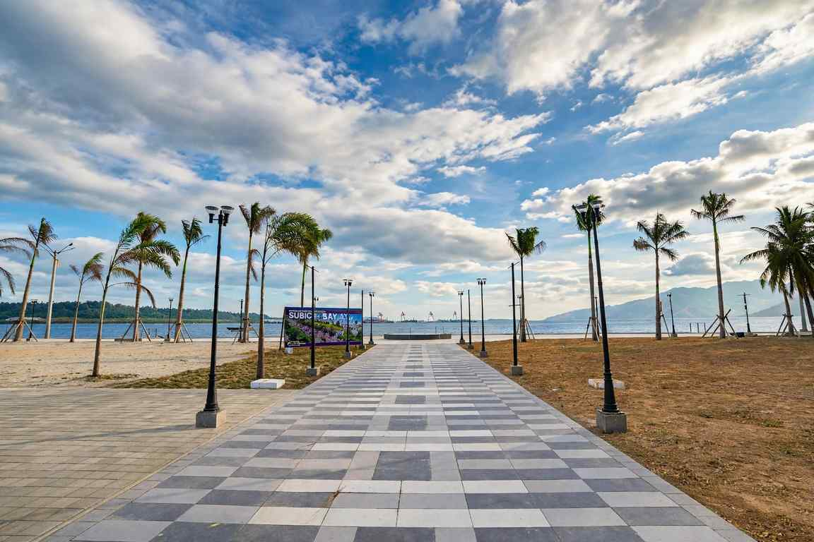

Subic Bay works best as a short, busy weekend. Inside the Subic Bay Freeport Zone, the former US naval base on the Zambales coast, you can ride a jeep through a tiger enclosure in the morning, swim off a forest-backed beach after lunch and watch the sun drop behind the Bataan hills from a boat deck in the evening, all within a few kilometres of each other.
Entering the Freeport costs nothing. Spending happens attraction by attraction, which means a family trip and a diver's trip can look completely different on paper. This guide covers the main things to do in Subic Bay, what each one roughly costs, the quickest way in through Clark, and how to fit the highlights into two days without spending half of them in traffic.
One thing surprises first-timers: the Freeport is spread out. Theme parks sit in the forested western side, the hotels and duty-free shops cluster near the waterfront, and the beach resorts of Barretto lie just outside the gates in Olongapo. Plan your days by area and the trip gets much easier.

The Forest Side: Zoobic Safari and Ocean Adventure
The two attractions most families come for sit close together in the Ilanin Forest area, roughly ten minutes apart by car, so pairing them on one day makes sense.
Zoobic Safari is a hands-on animal park. The highlight is the Tiger Safari, where a caged jeep drives into the tiger area while keepers bring the big cats close. There is also a Sky Safari ride and plenty of animal photo stops. Day admission is around PHP 695 for adults and PHP 595 for children, with day visits running from 8am to 4pm and a separate Night Safari that starts around 6pm. Expect it to feel crowded on weekends and school holidays, and go early if you want unhurried time at the tiger stop.
Ocean Adventure, at Camayan Wharf, is a marine park with animal presentations and exhibits. Online tickets run at about PHP 749 per person. If you have views on marine animals in captivity, read up on the park before you go so the visit matches what you are comfortable with. The adjoining Camayan Beach is a calmer place to swim once the shows are done, and combo entry with Ocean Adventure is often available.
On the Water: Floating Parks, Cruises and Wrecks
Inflatable Island is a floating obstacle course anchored in the bay, billed as one of the largest in Asia. Slides, climbing towers and open swim areas make it a favourite for barkadas and birthday groups. Packages usually fall between PHP 800 and PHP 1,500 per head depending on how many activities you add. Bring a rash guard and reef-safe sunscreen, because there is very little shade out on the water.
A sunset cruise is the gentlest way to see the bay. Shared boats run for one to two hours in the late afternoon, and prices are modest compared with the theme parks, often a few hundred pesos per person when booked online. The appeal is simple: open water, the old naval harbour, and the ridges of Bataan turning orange across the bay.
For certified divers, wreck diving is Subic's quiet specialty. The bay holds sunken ships from different eras, including the USS New York, an American cruiser scuttled by its own navy during World War II, plus a landing ship and Japanese vessels at depths of roughly 15 to 40 metres. Fun dives typically cost PHP 2,500 to PHP 4,000, and open water courses around PHP 12,000 to PHP 18,000. Some of these sites suit advanced divers only, so be honest with the dive shop about your experience and logged depth.
Beaches, Culture and Shopping
Inside the Freeport, Camayan Beach is the prettiest option, with clear water and a forest backdrop. Family beaches such as All Hands and Dungaree are simpler and cheaper, with entrance fees in the PHP 250 to PHP 400 range. Just outside the gates, Barrio Barretto in Olongapo has a strip of resorts with pools and beach access, including Wild Orchid and Central Park Reef, which suit travellers who want a bed close to the sand.
For something different, full-day forest tours with the Aeta, the indigenous people of these mountains, show how the community lives and uses the forest, including traditional survival skills. These are usually guided packages and cost considerably more than the theme parks, so compare what is included before booking.
The Freeport's duty-free shops, such as Royal Duty Free, are a classic stop on the way out. Imported chocolates, snacks and household goods are the usual buys, and prices are worth checking against what you pay at home before filling a cart.
Getting to Subic Bay
There is no commercial airport in Subic, so the nearest gateway is Clark International Airport in Pampanga, about 56 km away. Domestic flights into Clark take under two hours from most Visayas and Mindanao cities. From the airport you have two choices:
- Taxi or private car: about an hour via the expressway, usually PHP 1,200 to PHP 2,000. Worth it for families or groups who can split the fare.
- Bus: a short taxi or tricycle ride to Dau Bus Terminal, then a bus to Olongapo for around PHP 100. Allow two to three hours depending on traffic, then a jeepney or taxi into the Freeport.
If you are already in Manila, buses from Cubao, Buendia and PITX reach Olongapo in about three to four hours, with fares around PHP 300 to PHP 450. Day tour packages with round-trip transfers from Manila, Zoobic Safari and Ocean Adventure start at about PHP 2,900 per person, which is a fair deal if you only have one day.
Getting around inside the Freeport is the weak point. Jeepneys and tricycles run, but the attractions are far apart, so a rented car or a hired driver for the day saves a lot of waiting. Carry a valid ID, since vehicles pass through gates, especially at night.
How Long to Stay and What It Costs
Two days and one night covers Zoobic Safari, Ocean Adventure and a beach afternoon. Add a third day for diving, an Aeta forest tour or a slower morning at the resort. A plan that flows well:
- Day 1: Zoobic Safari in the morning, Ocean Adventure after lunch, then Camayan Beach until sunset.
- Day 2: Inflatable Island while the water is calm, a lazy afternoon by the pool, and a sunset cruise before dinner.
For budgeting, figure roughly PHP 2,500 to PHP 3,500 per adult for the three main attractions, plus PHP 4,000 or more per night for a resort room in Barretto. Some hotels inside the Freeport, Horizon Hotel among them, offer guests 10 to 15 percent off several attractions, so ask at check-in before buying tickets. Many promo rates are not valid during the Christmas rush from mid-December to early January or during Holy Week.
When to Go
November to May is the dry season and the easiest time for beaches and the floating park. June to October brings rain and the chance of storms, though crowds thin out and some water attractions keep running on good days. Divers will find the calmest conditions from December to March. Whatever the month, leave Clark before 9am if you are taking the bus, since afternoon traffic toward Olongapo can stretch the trip badly.
If you have an extra day in Zambales, the camping beaches of Anawangin and Nagsasa coves are further up the same coast, and the Mount Pinatubo crater trek pairs well with a Clark arrival. Visiting in December? Time your route through Pampanga for the Giant Lantern Festival and the drive becomes part of the trip.
Prices and schedules above change often, so confirm current rates with each attraction or your hotel before you travel.

1 Comment
BBrenda Macaraig
I've visited here in 2008, that was the last time i visited subic bay. I'd love to come back again
Ren Calago Author
I'm glad to hear from you Brenda, I hope your experience was extraordinary
Leave a Reply